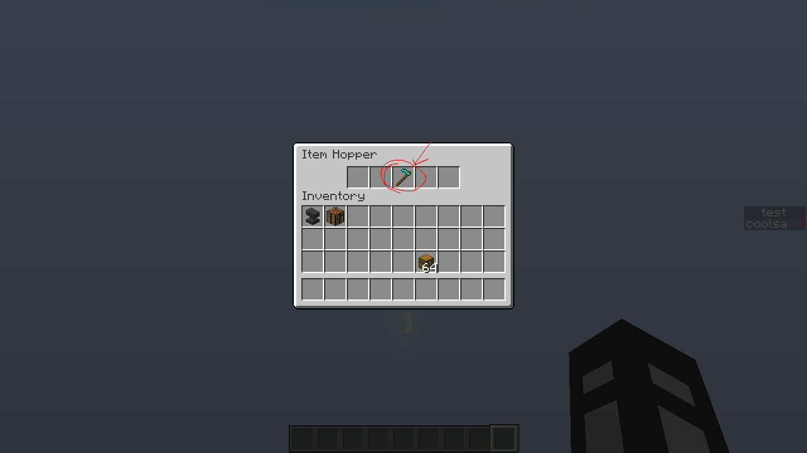
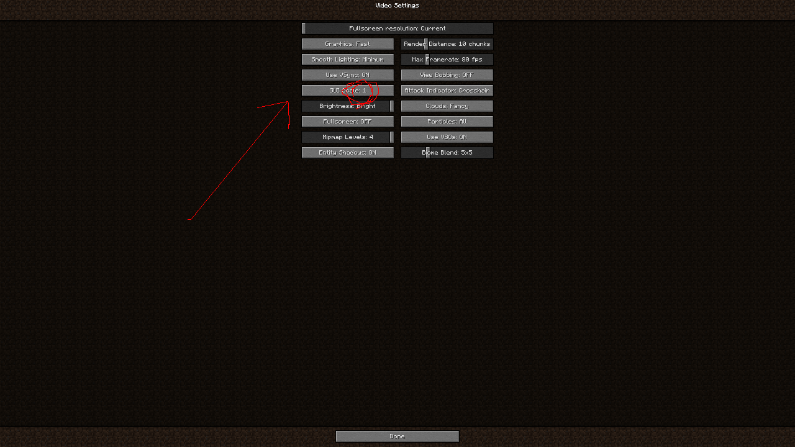
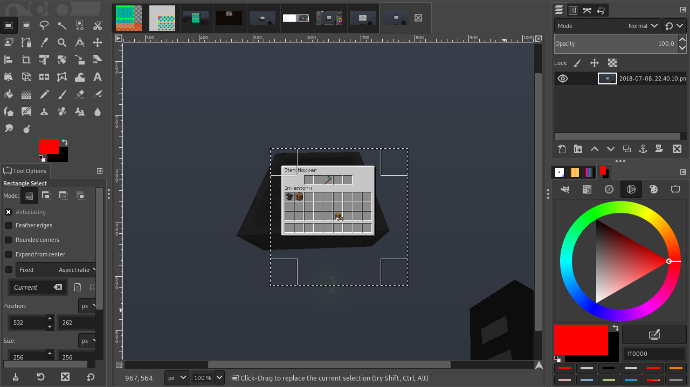
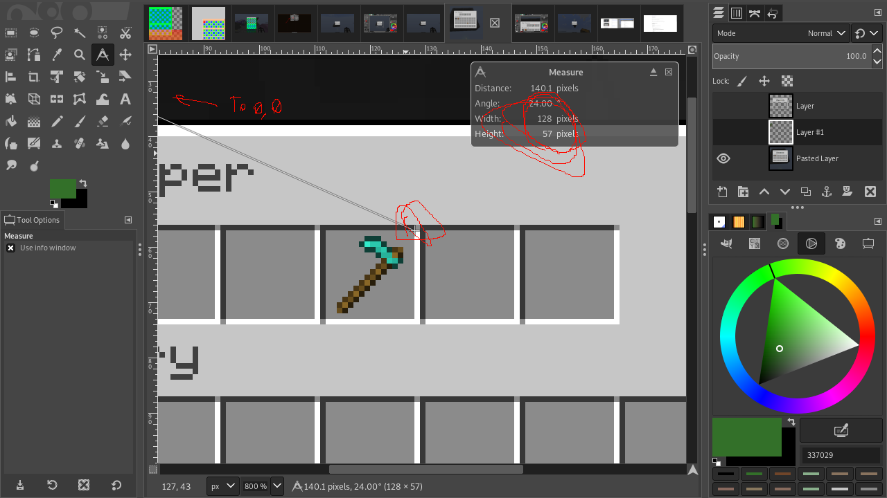
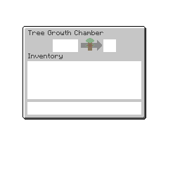
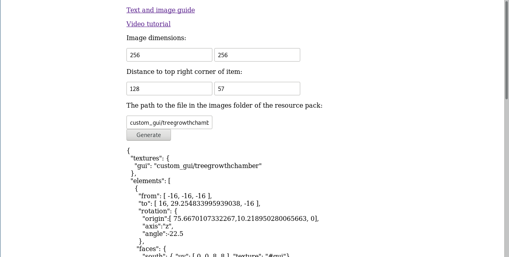
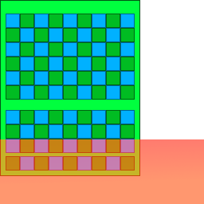
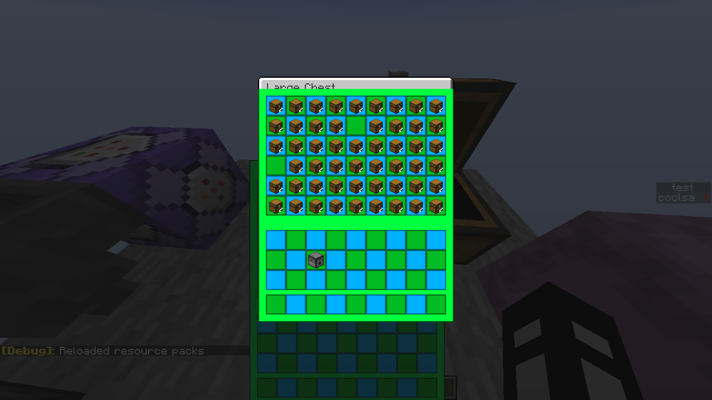

This is the guide or tutorial on how to use this tool.
1: Find the inventory and the spot you want to use.

2: Screenshot inventorty with gui scale = 1, the option is found in video settings.

3: Select 256 by 256 area.
Do note that you can use other areas, just make sure its 256 * gui scale square to use this trick.

4: Take measurments of the top right of where you will be putting the item that is rendering the inventory.

5: Edit the texture as you wish and save it in a resource pack.

6: Input size, measurements, and image name and save the generated file.

When following these steps, I got this for my result.

Bugs, issues, etc:
Please note, that for the bottom fifth, or anywhere that gives a final result with over 70 for the translation may appear cut off on the top.

Also, text can look weird if rendering over inventories above the item.

Image sizes that are different from a 256 square are untested.